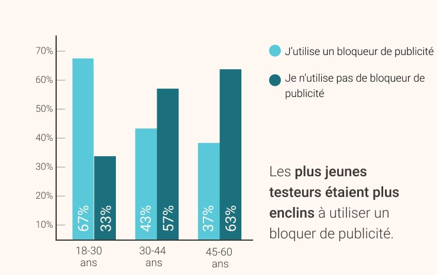
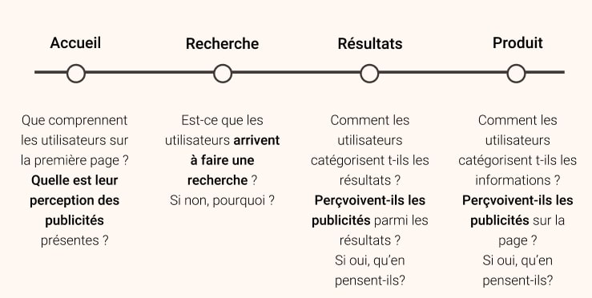
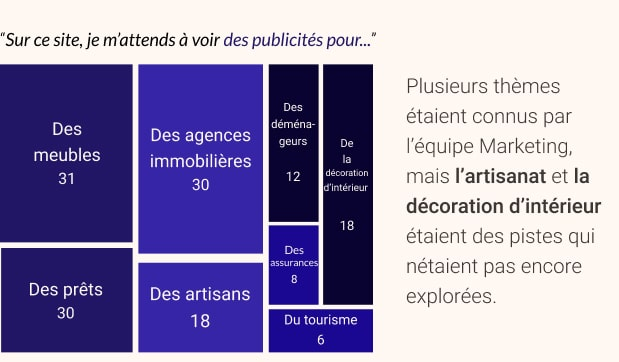

Durant mon expérience en tant que UX Remote Researcher chez Testapic, j'ai réalisé plus de 50 études utilisateurs, quali et quanti confondus. Au total, j'ai analysé plus de 1 500 retours utilisateurs issus d'enregistrements vidéos de session, de tests d'utilisateurs à distance non modérés et de réponses aux questionnaires. J'ai pu effectuer un grand nombre de projets liés à l'UX, comme aider à redesigner l'architecture de l'information d'un site institutionnel, explorer les pain points des utilisateurs sur des sites de e-commerce, ou encore m'intéresser aux principales motivations et les facteurs de différenciation dans le domaine bancaire.
L'un des projets les plus intéressants sur lequel j'ai travaillé de redéfinir l'expérience publicitaire sur l'un des plus grands sites d'immobilier et de location en France. J'ai particulièrement apprécié ce projet car il traitait de la publicité, qui n'a pas assez de visibilité dans le domaine de l'UX à mon avis. Cela semble vraiment paradoxal quand on connaît l'impact que les publicités peuvent avoir sur l'expérience utilisateur !
Rôle : Réalisation de l'ensemble de la recherche utilisateur, supervisé par Nicolas Guirao (CEO)
Méthodologie : Questionnaire, test à distance des utilisateurs, analyse statistique
Outils : Google Forms, Testapic, Figma, Marvel,
Google Sheets
Durée : Environ 1 mois
Considérée par beaucoup comme une nuisance et par d'autres comme un "mal nécessaire", il est clair que la publicité a une influence non négligeable sur notre vie numérique. En général, la perception de la publicité d'un point de vue centré utilisateur est simple : c'est quelque chose qui n'est ni demandé ni souhaité par l'utilisateur, elle doit alors être masquée le plus possible et au mieux ne pas être présente.
Simple, n'est-ce pas ?
Mais si, nous prenons en compte les besoins de TOUTES les parties prenantes, et notamment les besoins liés au revenu ? Il devient alors évident que la publicité doit être prise en compte dans la stratégie UX à long terme, et qu'il est dans le meilleur intérêt des utilisateurs ET des entreprises d'avoir la meilleure expérience possible.
De ce fait, deux objectifs ont été fixés pour cette étude:
Evaluer la perception de la publicité numérique en général d'une part
et
évaluer la maquette du site et de l'application d'autre part, afin de recueillir les
retours des utilisateurs et aider les équipes à proposer une expérience publicitaire plus pertinente.
Pour remplir le premier objectif, j'ai envoyé un questionnaire à 2888 testeurs du panel interne Testapic. Les résultats ont servi de base pour commencer cette étude :

J'ai également interrogé les utilisateurs concenant leurs attentes en termes de publicité, ce qui m'a aidé plus tard à définir
les caractéristiques de publicités "de bonne et de mauvaise qualité"..
Pour ce faire, les testeurs ont été invités à compléter des phrases avec leurs propres mots.
Tous ces éléments m'ont permis de mieux comprendre la perception de la publicité, du point de vue des utilisateurs et de réaliser qu'il fallait globalement faire un effort considérable pour présenter des publicités pertinentes.
Après cette introduction générale, il était alors temps de creuser un peu plus et d'évaluer l'interface avec :
• Evaluer les différents types de formats publicitaires et définir des préférences.
• Identifier le seuil de pression publicitaire toléré par les utilisateurs.
• Identifier les attentes utilisateurs en termes de contenu publicitaire.
Les tests ont été effectués sur des prototypes animés par Marvel, portant sur le site web et l'application du client ainsi que sur un concurrent. J'ai recruté au total plus de 120 participants pour ces tests utilisateurs.
Bien que effectuer un test sur un seul site soit intéressant en soi, je recommande toujours d'introduire un concurrent dans le parcours pour obtenir une nouvelle perspectivesur les retours utilisateurs. C'est aussi une bonne façon d'aider les testeurs à identifier des éléments qu'ils n'auraient peut-être pas remarqués dans un seul produit, la comparaison entre deux éléments étant plus simple pour s'exprimer.
Les résultats ont principalement montré que les publicités les plus appréciées étaient les plus pertinentes,
selon le contexte de navigation, mais également les publicités qui étaient les mieux "camouflées",
c'est à dire celles qui n'étient pas perçues comme étant des publicités.
Il est intéressant de noter que les publicités interactives n'ont pas été identifiées
comme étant des publicités, sans doute de par leur intégration plus travaillée avec le site web.
Elles semblaient alors faire partie du contenu et les utilisateurs ont apprécié cela,
simplement parce qu'ils n'aimaient pas les publicités.
L'une des recommandations les plus importantes était basée sur cette observation,
à savoir de ne montrer que des publicités pertinentes,
parfaitement intégrées à la page du produit ou la liste des résultats avec des call-to-action clairs.
Ce fut également l'occasion de demander aux utilisateurs, via complétion de phrase, quelle catégorie de contenu publicitaire ils s'attendaient à voir présenté. Certains des résultats ont été surprenants, même pour les clients, qui ne s'attendait pas à ce que des publicités sur des sujets tels que "trouver des artisans" ou "conseil de décoration" soient mentionnées par les testeurs.
Trouver les attentes des utilisateurs était clairement une information nécessaire pour l'entreprise, car ils pouvaient alors fournir des publicités plus pertinentes et générer plus d'interactions en retour (donc plus de revenus !).
Cette étude m'a permis de découvrir un domaine encore méconnu de l'expérience utilisateur et de recueillir des observations utiles pour l'équipe marketing. En plus des informations relatives à la publicité, j'ai fourni plusieurs retours sur l'ergonomie générale du site issues de la comparaison avec le site concurrent.
Si je ne devais retenir qu'une chose, ce serait que les utilisateurs avaient au final des attentes réelles et bien définies en matière de publicité et qu'il y avait une demande pour des publicités plus pertinentes, ce qui me semblait vraiment contre-intuitif avant cette étude !
Merci d'avoir tout lu ! Vous pouvez également voir ce que j'ai fait chez Lyf Pay. 🛠️